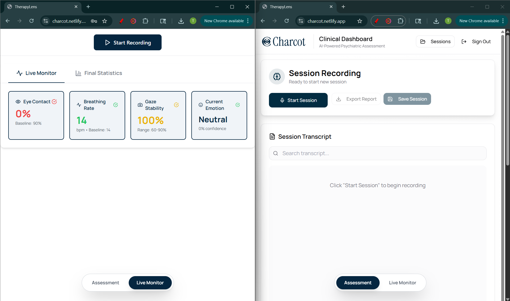

Click Here to Learn More!
For this hackathon project, I worked with a team of four to build Charcot, a multimodal
AI copilot for neuropsychiatric diagnosis that provides real-time diagnostic support during
live patient interviews. The platform analyzes both conversational and nonverbal cues to
help psychiatrists catch diagnostic patterns they might miss. I contributed real-time
speech-to-text transcription, facial landmark detection with MediaPipe for behavioral
analysis, and custom algorithms for eye-contact monitoring, gaze stability tracking, and
breathing-rate estimation — all on a privacy-first architecture with 100% local video
processing.
- React.js
- Python
- Flask
- TensorFlow
- MediaPipe
- AssemblyAI
- Node.js
- Vite
- Tailwind CSS
- OpenCV
- DeepFace
